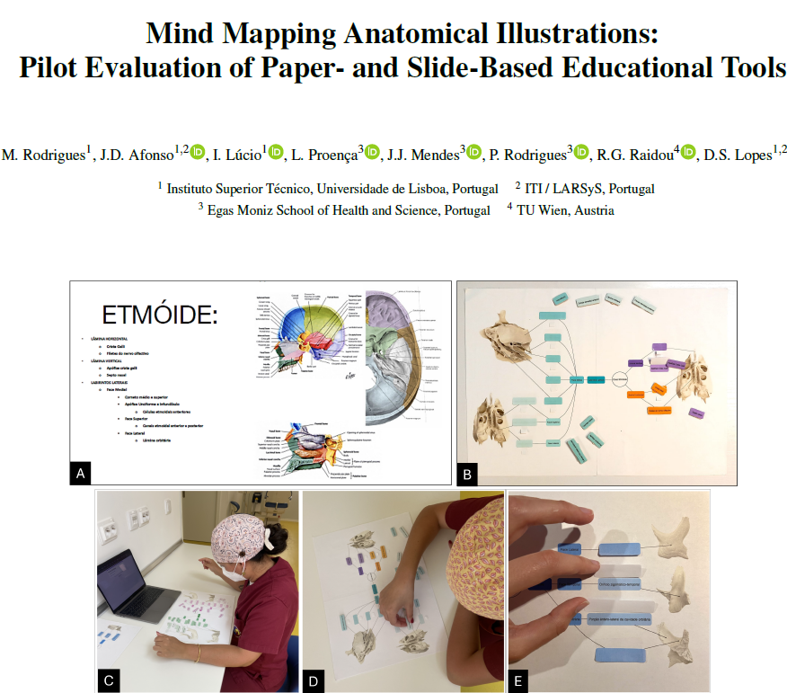
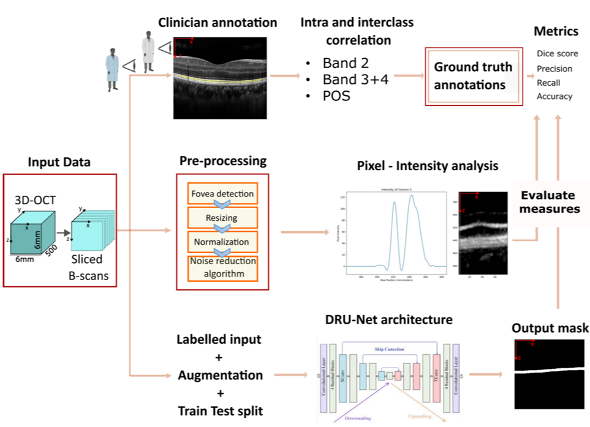

Welcome
I am a researcher at the Interactive Technologies Institute (ITI) , in Lisbon. My research focuses on automatic segmentation, self-supervised learning, computer vision, and data visualization. In this page you will find my most recent pulications/collaborations. Feel welcomed!
Selected Publications
Mind Mapping Anatomical Illustrations: Pilot Evaluation of Paper- and Slide-Based Educational Tools
Eurographics Workshop on Visual Computing for Biology and Medicine (2025)
Outer Retinal Bands Segmentation in Healthy Subjects: Comparative Study between Human and Deep Convolutional Neural Networks
Master Thesis

Extra Projects
Unity 3D collision detection and proximity queries: GitHub